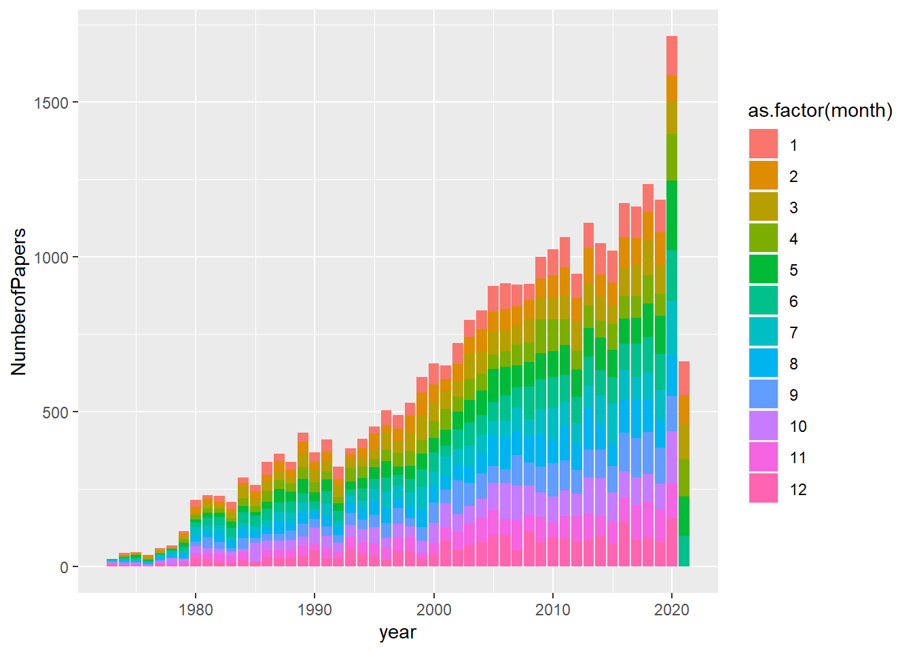
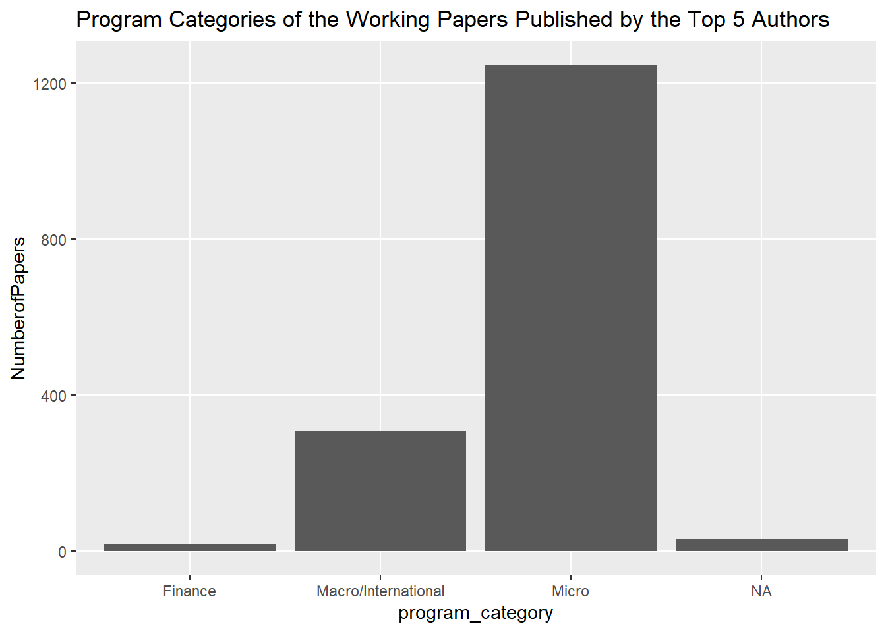

library("tidytuesdayR")
library(tidyverse)
library(dplyr)
library(ggplot2)Load the data
papers <- readr::read_csv('https://raw.githubusercontent.com/rfordatascience/tidytuesday/master/data/2021/2021-09-28/papers.csv')
authors <- readr::read_csv('https://raw.githubusercontent.com/rfordatascience/tidytuesday/master/data/2021/2021-09-28/authors.csv')
programs <- readr::read_csv('https://raw.githubusercontent.com/rfordatascience/tidytuesday/master/data/2021/2021-09-28/programs.csv')
paper_authors <- readr::read_csv('https://raw.githubusercontent.com/rfordatascience/tidytuesday/master/data/2021/2021-09-28/paper_authors.csv')
paper_programs <- readr::read_csv('https://raw.githubusercontent.com/rfordatascience/tidytuesday/master/data/2021/2021-09-28/paper_programs.csv')Examine first few rows of data
head(authors)
head(papers)
head(programs)
head(paper_authors)
head(paper_programs)Merge datasets
colnames(papers) #key = paper
colnames(paper_authors) #key = paper
colnames(authors) #key = author
colnames(paper_programs) #key = paper
colnames(programs) #key = program
joined_df <- left_join(papers, paper_authors) %>%
left_join(authors) %>%
left_join(paper_programs) %>%
left_join(programs)This form is tidy
summary(joined_df)## paper year month title
## Length:130081 Min. :1973 Min. : 1.000 Length:130081
## Class :character 1st Qu.:2005 1st Qu.: 4.000 Class :character
## Mode :character Median :2013 Median : 6.000 Mode :character
## Mean :2010 Mean : 6.515
## 3rd Qu.:2018 3rd Qu.: 9.000
## Max. :2021 Max. :12.000
## author name user_nber user_repec
## Length:130081 Length:130081 Length:130081 Length:130081
## Class :character Class :character Class :character Class :character
## Mode :character Mode :character Mode :character Mode :character
##
##
##
## program program_desc program_category
## Length:130081 Length:130081 Length:130081
## Class :character Class :character Class :character
## Mode :character Mode :character Mode :character
##
##
## tail(joined_df)## # A tibble: 6 x 11
## paper year month title author name user_nber user_repec program program_desc
## <chr> <dbl> <dbl> <chr> <chr> <chr> <chr> <chr> <chr> <chr>
## 1 h0132 2001 1 A Wo~ h0132~ Leon~ <NA> <NA> DAE Development~
## 2 h0133 2001 4 What~ h0090~ John~ john_wal~ <NA> DAE Development~
## 3 h0134 2001 7 The ~ h0002~ Mich~ michael_~ pha740 DAE Development~
## 4 h0135 2001 8 The ~ h0071~ Jose~ joseph_f~ <NA> DAE Development~
## 5 h0136 2001 11 The ~ h0090~ John~ john_wal~ <NA> DAE Development~
## 6 h0137 2001 12 Shor~ h0137~ Howa~ howard_b~ <NA> DAE Development~
## # ... with 1 more variable: program_category <chr>Examine program variables: program, description of program, program category
table(joined_df$program)##
## AG AP CF CH DAE DEV ED EEE EFG HC HE IFM IO
## 4237 6804 6153 4502 3370 3849 4311 3084 13113 4678 6671 8570 4492
## ITI LE LS ME PE POL PR TWP
## 7125 2793 14084 7121 13967 3557 6084 986table(joined_df$program_desc)##
## Asset Pricing
## 6804
## Children
## 4502
## Corporate Finance
## 6153
## Development Economics
## 3849
## Development of the American Economy
## 3370
## Economic Fluctuations and Growth
## 13113
## Economics of Aging
## 4237
## Economics of Education
## 4311
## Environment and Energy Economics
## 3084
## Health Care
## 4678
## Health Economics
## 6671
## Industrial Organization
## 4492
## International Finance and Macroeconomics
## 8570
## International Trade and Investment
## 7125
## Labor Studies
## 14084
## Law and Economics
## 2793
## Monetary Economics
## 7121
## Political Economics
## 3557
## Productivity, Innovation, and Entrepreneurship
## 6084
## Public Economics
## 13967
## Technical Working Papers
## 986table(joined_df$program_category, useNA = "ifany") #should be a factor##
## Finance Macro/International Micro <NA>
## 12957 35929 79679 1516Cleaning and wrangling
cleaned_data <- joined_df %>%
mutate(program_category = as.factor(program_category))What is the trend of working papers over time? Seems like increasing every year, with a pretty even breakdown by month. Could do stat test.
NumPapers <- cleaned_data %>%
group_by(year, month) %>%
summarise(NumberofPapers = n_distinct(paper)) #to avoid double counting same paper when two authors## `summarise()` has grouped output by 'year'. You can override using the `.groups` argument.ggplot(data=NumPapers, aes(x=year, y=NumberofPapers, fill = as.factor(month))) +
geom_bar(stat="identity") 
Who has the most working papers total? Jonathan Gruber
cleaned_data %>%
group_by(name) %>%
summarise(NumberofPapers = n()) %>%
arrange(desc(NumberofPapers)) ## # A tibble: 15,398 x 2
## name NumberofPapers
## <chr> <int>
## 1 Jonathan Gruber 359
## 2 James J Heckman 331
## 3 Daron Acemoglu 308
## 4 Janet M Currie 306
## 5 Michael D Bordo 297
## 6 Edward L Glaeser 291
## 7 Joshua Aizenman 284
## 8 Martin S Feldstein 272
## 9 Andrei Shleifer 242
## 10 Alan M Taylor 239
## # ... with 15,388 more rowsWho has the most working papers published in one month? Janet M Currie
cleaned_data %>%
group_by(year, month, name) %>%
summarise(NumberofPapers = n()) %>%
arrange(desc(NumberofPapers)) ## # A tibble: 62,049 x 4
## # Groups: year, month [576]
## year month name NumberofPapers
## <dbl> <dbl> <chr> <int>
## 1 2020 1 Janet M Currie 20
## 2 2018 10 Solomon M Hsiang 19
## 3 2020 5 Kosali Ilayperuma Simon 17
## 4 2017 4 Fatih Guvenen 16
## 5 2019 5 Xavier D'Haultfoeuille 16
## 6 2019 6 David Card 16
## 7 2020 3 Wei Xiong 16
## 8 2020 4 Johannes C Stroebel 16
## 9 2020 4 Theresa Kuchler 16
## 10 2020 5 Constantine Yannelis 16
## # ... with 62,039 more rowsWhat kind of working papers are being published by the top 5 authors? Mostly microeconomics.
TopAuthors <- cleaned_data %>%
group_by(program_category) %>%
filter(name %in% c("Jonathan Gruber", "James J Heckman", "Daron Acemoglu", "Janet M Currie", "Michael D Bordo")) %>%
summarise(NumberofPapers = n())
ggplot(data=TopAuthors, aes(x=program_category, y=NumberofPapers)) +
geom_bar(stat="identity") +
ggtitle("Program Categories of the Working Papers Published by the Top 5 Authors")